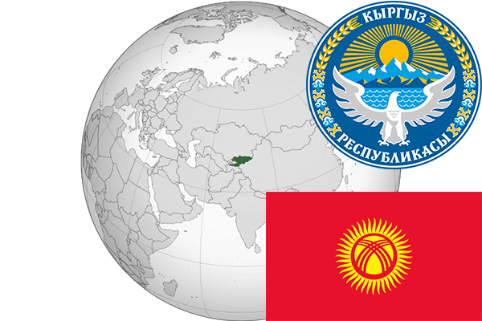

To`liq nomi: Qirg`iziston Respublikasi
Region: O`rta Osiyo
Qonunchilik shakli: Respublika
Mustaqillik kuni: 31-avgust 1991-yil (Sobiq Ittifoqdan)
Poytaxt: Bishkek
Maydoni: 199 951 km² (dunyoda 85 -o`rinda )
Chegaradosh davlatlari: Qozog`iston, Xitoy, Tojikiston, O`zbekiston.
Aholisi: 6 019 500 (dunyoda 111 - o`rinda, 2016 -yil roʻyxat)
Aholi zichligi: 29/km²
Aholining o`rtacha yoshi: 68,9 yil (73,0 ayollar, 64,8 erkaklar)
Rasmiy tili: Qirg`iz tili
Dini: Musulmonlar va pravoslavlar
Pul birligi: Qirg`iz somi
Telefon prefiksi: +996
Internet domen: .kg
Xalqaro tashkilotlarga a`zoligi: BMT (1992 – yildan), MDH,Shanxay Hamkorlik Tashkiloti (2001-yildan), Yevroosiyo Iqtisodiy Ittifoqi (2015-yildan)
Dengiz va okeanlarga chiqishi: yo`q
YIM: Butun: $ 18,001 mlrd, Jon boshiga $ 2 409 (2012 - yil roʻyxati)
Yirik shaharlari: Bishkek, Osh, Jalol-Obod